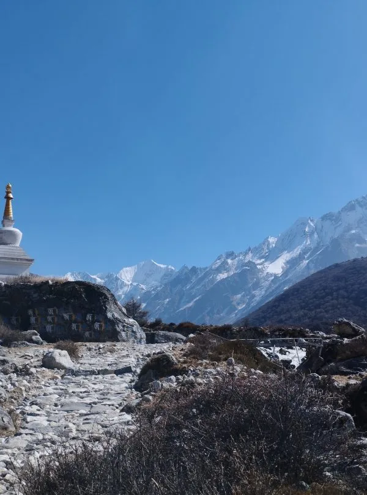

1. Langtang Valley Climate, Elevation Profile & Luggage Weight Limits

Unlike the Everest Base Camp trek where small mountain aircraft enforce strict 15kg airline baggage limits, the Langtang Valley Trek begins with an overland drive from Kathmandu to Syabrubesi (1,460m) in a private 4WD jeep or tourist bus.
However, road access does not mean you should pack an oversized suitcase. Once you leave the trailhead at Syabrubesi, all main luggage is carried on the backs of human porters or pack animals over steep river gorge stairs and boulder trails.
| Luggage / Environmental Factor | Recommended Specification | Field Rationale & Rules |
|---|---|---|
| Main Porter Duffel Bag | 12 – 15 kg (26 – 33 lbs) | Ethical porter weight limits cap individual loads at 20–25kg shared between two clients. |
| Personal Daypack | 25 – 30 Liters (4 – 6 kg / 9 – 13 lbs) | Carried by you containing daily water, rain shell, down jacket, medications, and valuables. |
| Lower Elevation Climate (1,400m–2,500m) | Day: 18°C–24°C / Night: 8°C–14°C | Warm, humid forest hiking along the Langtang Khola river; lightweight tees and shorts. |
| High Elevation Climate (3,400m–4,984m) | Day: 8°C–15°C / Night: -5°C to -15°C | Sub-zero nighttime temperatures, biting mountain winds, and unheated teahouse bedrooms. |
2. The 4-Layer Clothing System: Mastering Rapid Micro-Climate Changes
The secret to staying warm, dry, and energetic in the Himalayas is mastering the 4-layer outdoor clothing system. Packing single heavy cotton garments creates misery because you cannot regulate your body heat as you alternate between uphill exertion in direct sun and freezing rest breaks in shaded wind.
Layers 1 & 2: Base & Mid Layers
- Layer 1 (Merino Wool Base Layer): 200–250gsm merino wool long-sleeve tops (2 pairs) and leggings (1 pair). Merino wicks sweat, dries quickly, and stays naturally odor-free over multiple days.
- Layer 2 (Breathable Mid-Layer Fleece): A lightweight grid fleece jacket (such as Polartec Power Grid or Patagonia R1) or breathable synthetic pullover worn during brisk morning ascents.
Layers 3 & 4: Insulation & Weather Shell
- Layer 3 (High-Loft Down Jacket): A 700–800 fill power down jacket with an insulated hood. Non-negotiable for evenings in Kyanjin Gompa and early morning viewpoint climbs.
- Layer 4 (Waterproof / Windproof Shell): A durable 2.5 or 3-layer Gore-Tex rain jacket with pit-zips and waterproof pants to shield you from sudden afternoon rain, sleet, or high winds.
Never pack cotton t-shirts, cotton hoodies, or denim jeans. Cotton absorbs sweat like a sponge, takes days to dry in freezing mountain air, and strips away your body heat when damp, inviting rapid hypothermia. Pack only merino wool or technical polyester garments.
3. Footwear & Socks: Tackling Tree Roots, Rocky Steps & Glacial Scree

The terrain in Langtang Valley transitions dramatically: from mossy tree roots and slick stone stairways between Syabrubesi and Lama Hotel, to sandy riverbeds, loose glacial moraine, and boulder fields around Kyanjin Gompa.
- Waterproof Trekking Boots: Sturdy, mid-to-high-cut boots with Gore-Tex lining and Vibram rubber outsoles. Ankle support is crucial for stabilizing your joints when descending steep steps with tired legs.
- The Conditioning Mandate: Never hike in brand-new boots! Break them in with at least 40 kilometers of walking, hiking, or stair climbing before traveling to Nepal.
- Merino Wool Trekking Socks (4–5 Pairs): High-density cushioned wool socks (such as Darn Tough or Smartwool) prevent friction blisters, manage foot sweat, and retain cushioning all day.
- Camp Footwear: A pair of lightweight slip-ons, crocs, or running shoes to wear inside the teahouse dining hall while your boots air out.
- Trekking Poles (Pair): Essential for reducing knee impact by up to 25% on the punishing downhill descent from Lama Hotel to Syabrubesi.
4. Sleeping Bag Ratings & Sleep Systems for Unheated Kyanjin Lodges

A common mistake made by first-time trekkers in Langtang is assuming that a 2-season summer sleeping bag or relying exclusively on teahouse blankets is sufficient.
In Langtang, teahouse bedrooms have thin plywood walls without central heating. In Kyanjin Gompa (3,870m), bedroom temperatures drop to -5°C to -12°C (23°F to 10°F) overnight in autumn and spring, and below -18°C in winter.
Pack a down sleeping bag with a Comfort Rating of -10°C to -15°C (14°F to 5°F). If you do not own an expensive expedition bag, you can rent one in Kathmandu for just $1.50 to $2.00 USD per day ($15 total). Bring a silk or microfleece sleeping bag liner for personal hygiene and an extra 3°C of warmth!
5. Daypack Essentials (25L–30L): What Must Stay on Your Back All Day
While your main duffel bag travels ahead with your porter to the evening lodge, your personal daypack contains your life-support equipment for the 5 to 7 hours you spend walking on the trail.
The optimal daypack capacity for Langtang is 25 to 30 Liters with an ergonomic hip belt, structured back ventilation, and an integrated rain cover. Keep your total pack weight under 5 to 6 kilograms (11–13 lbs).
| Item Category | Specific Contents | Why It Must Stay on Your Person |
|---|---|---|
| Hydration & Food | 2 Liters of water + purification tablets / SteriPEN + energy bars / nuts | Hydration prevents altitude sickness; trail snacks maintain blood sugar between teahouses. |
| Weather Armor | Gore-Tex rain jacket, mid-layer fleece, packable down jacket, warm beanie | Mountain weather can shift from intense sunshine to freezing hail in 20 minutes. |
| Sun Protection | Category 3 sunglasses, wide-brim sun hat, SPF 50+ sunscreen, lip balm | High-altitude UV rays burn unprotected skin rapidly even through light cloud cover. |
| Health & First Aid | Personal medications, Diamox, Compeed blister pads, pocket hand sanitizer | You cannot access your porter’s duffel bag if a blister or headache strikes mid-hike. |
| Valuables & Power | Passport, trekking permits, cash (NPR), phone, 20,000mAh power bank | Never send original documents or cash in your porter's duffel bag. |
6. Main Porter Duffel Organization: Packing Cubes & Waterproof Liners
Your main duffel bag should be a rugged, water-resistant 80L to 100L expedition duffel (such as The North Face Base Camp Duffel or Patagonia Black Hole, or the complimentary heavy-duty duffel bag provided by Igloo Himalaya Treks).
Even water-resistant duffel bags can absorb moisture if set down on wet grass or carried through prolonged mountain rainfall. Follow these professional packing rules:
- Heavy-Duty Trash Bag Liner: Line the entire inside of your duffel bag with a heavy-duty contractor trash bag before packing your clothes. This creates an impenetrable waterproof barrier.
- Compression Packing Cubes: Organize your clothes into color-coded packing cubes (e.g. one cube for base layers, one for socks and underwear, one for evening camp clothes). This saves space and keeps your gear neat inside dark teahouse bedrooms.
- Dry Sacks for Down Gear: Store your expensive down jacket and sleeping bag inside dedicated silicone-coated dry sacks with roll-top buckles. If down gets wet, it loses all insulating loft and takes days to dry.
7. Safe Hydration Logistics: Reusable Bottles vs. UV / Chemical Purification
Proper hydration is the single most effective defense against Acute Mountain Sickness (AMS). You must consume 3.5 to 4.5 liters of fluid per day along the Langtang trail.
To protect Langtang National Park from plastic pollution and save money, never rely on disposable plastic bottled water.
Bottle Configuration
- 2x 1-Liter Wide-Mouth Nalgene Bottles: Durable, BPA-free, and withstand boiling water. You can fill them with boiled water at night and use them as a hot water bottle inside your sleeping bag!
- Insulated Bottle Parka: Prevents water from freezing at night in Kyanjin Gompa and keeps water cool during warm valley hikes.
Purification Methods
- SteriPEN Ultra (UV Purifier): Destroys 99.9% of bacteria, viruses, and protozoa in 90 seconds without chemical aftertaste. Carry a backup USB power bank.
- Aquatabs / Chlorine Dioxide Tablets: Lightweight, foolproof backup tablets. Takes 30 minutes to kill bacteria and 4 hours for cryptosporidium oocysts.
8. Electronics, Cold Battery Management & Teahouse Charging Fees

Electricity in the Langtang Valley is powered by local micro-hydro turbines and solar panels. While Syabrubesi has grid power, lodges in Lama Hotel, Langtang Village, and Kyanjin Gompa charge NPR 200 to 400 ($1.50 to $3.00 USD) per device or power bank charge.
Furthermore, freezing sub-zero night temperatures drain lithium-ion batteries rapidly. A smartphone left on a wooden nightstand in Kyanjin Gompa can drain from 80% to 0% overnight.
- Carry a 20,000mAh Power Bank: Provides 4–6 full smartphone charges, keeping your devices powered for the entire trek without paying daily socket fees.
- Sleep with Your Electronics: Keep your phone, camera batteries, and power bank inside the foot of your sleeping bag at night so body heat preserves battery life.
- Airplane Mode: Keep your phone on airplane mode when hiking; searching for weak cell signals drains battery 3x faster.
9. Sun & Weather Armor: Category 3 Eyewear, Wide-Brim Hats & Rain Shells
UV radiation increases by 10% to 12% for every 1,000 meters gained. At Kyanjin Gompa (3,870m) and Tserko Ri (4,984m), the sun is exceptionally intense, and light reflects off white granite boulders and snowfields.
- UV Category 3 or 4 Sunglasses: High-protection polarized sunglasses with side shields to block peripheral glare. Essential for preventing photokeratitis (snow blindness).
- Sun Protection Accessories: A wide-brim trekking hat for daytime hiking, a warm fleece beanie for cold mornings, and high-SPF 50+ mineral sunscreen with zinc oxide.
- Merino Wool Buff / Neck Gaiter: Protects your neck from sunburn and covers your mouth against cold, dry valley dust.
10. High-Altitude Medical Kit: Diamox, Blister Care & Trail Pharmaceuticals
There are no comprehensive pharmacies between Syabrubesi and Kyanjin Gompa. You must carry a compact, well-organized personal medical kit in your daypack:
| Medication / Supply | Recommended Quantity | Trail Purpose |
|---|---|---|
| Diamox (Acetazolamide) | 1 strip (10–20 tablets, 125mg or 250mg) | Speeds body acclimatization and alleviates mild AMS symptoms above 3,000m. |
| Ibuprofen & Paracetamol | 1–2 strips | Treats high-altitude tension headaches, muscle aches, and joint inflammation. |
| Blister Care (Compeed & Leukotape) | 1 pack hydrocolloid pads + roll of tape | Apply to hot spots immediately to stop blisters before they tear. |
| Oral Rehydration Salts (ORS) | 1–2 sachets daily | Replenishes vital electrolytes lost through uphill sweating and dry air. |
| Antidiarrheal (Imodium / Loperamide) | 1 strip | Emergency relief for gastrointestinal upset between trail settlements. |
| Throat Lozenges (Strepsils) | 1–2 packs | Soothes dry throat and bronchial irritation from breathing dry alpine air. |
11. Personal Hygiene, Biodegradable Wet Wipes & The "Dry Shower" Kit
Hot showers in Langtang teahouses are heated by gas cylinders or solar panels, costing NPR 300 to 500 ($2.50 to $4.00 USD). Above Lama Hotel, washrooms are drafty and cold, and taking wet showers increases your risk of catching a chill or respiratory infection.
Veteran Himalayan hikers rely on the "Dry Shower" strategy:
- Biodegradable Wet Wipes (2–3 packs of 30): Use wet wipes for a thorough daily sponge bath before changing into clean evening base layers. Keep the wipes inside your sleeping bag at night so they don't freeze!
- Pocket Hand Sanitizer (2 bottles): Use frequently before eating meals and after using teahouse toilets.
- Toilet Paper (2 rolls): Lodges do not provide complimentary toilet paper. Keep your rolls in a waterproof ziplock bag.
- Quick-Dry Microfiber Towel: Lightweight, compact, and dries in 2 hours when hung in your room.
12. Optional Viewpoint Gear: Microspikes & Trekking Poles for Tserko Ri (4,984m)

While the main Langtang Valley trail to Kyanjin Gompa (3,870m) is entirely non-technical, many trekkers choose to climb the iconic panoramic viewpoints: Kyanjin Ri (4,773m) or Tserko Ri (4,984m).
Ascending Tserko Ri involves a steep 1,100-meter climb over loose scree, frozen moraine, and boulder fields starting before dawn at 4:30 AM:
- Microspikes / Slip-On Crampons: Essential in spring (March/April) or autumn/winter when snow patches freeze into slippery verglas on the upper summit crest.
- Heavy Windproof Gloves & Warm Beanie: Ridge winds at 4,900m can push temperatures down to -15°C with wind chill.
- Headlamp (with fresh batteries): Mandatory for pre-dawn departures from Kyanjin Gompa.
13. Renting vs. Buying in Kathmandu: What to Source in Thamel
You do not need to spend thousands of dollars buying expensive gear at home that you may never use again. Kathmandu's Thamel district is the outdoor gear capital of South Asia, offering high-quality gear rentals at unbeatable prices:
| Gear Item | Buy at Home or Rent in Thamel? | Approximate Rental Cost in Kathmandu |
|---|---|---|
| Hiking Boots & Daypack | Buy at home: Must fit your foot anatomy perfectly and be broken in. | Do not rent; boots must fit your personal feet. |
| Merino Base Layers & Socks | Buy at home: Personal hygiene items requiring authentic merino wool. | Not rentable; buy quality merino before traveling. |
| Heavy Down Jacket (-15°C) | Rent in Thamel: Excellent quality 700–800 fill power down parkas. | $1.50 – $2.50 USD / day ($12–$20 total) |
| Four-Season Sleeping Bag (-15°C) | Rent in Thamel: Clean, professionally laundered mummy down bags. | $1.50 – $2.00 USD / day ($12–$16 total) |
| Trekking Poles & Microspikes | Buy in Thamel: Inexpensive, reliable lightweight poles and spikes. | $15 – $25 USD to purchase outright in Kathmandu. |
14. Seasonal Packing Variations: Spring Rhododendrons vs. Autumn Clarity vs. Winter Snow
While the baseline checklist remains constant, tailoring your gear to your travel month ensures complete comfort:
- Autumn (Oct – Nov): Peak clarity, dry trails, freezing night temperatures (-10°C at Kyanjin). Focus on heavy down layers, warm beanies, and box-wall sleeping bags.
- Spring (March – May): Warmer daytime hiking (15°C–20°C in lower valley), blooming rhododendrons, afternoon breezes. Pack lighter trekking shirts, high-SPF sun protection, and microspikes for late-season snow on Tserko Ri.
- Winter (Dec – Feb): Crisp, empty trails with severe sub-zero cold (-15°C to -20°C). Mandatory microspikes, heavy expedition mittens, down booties for the lodge, and chemical hand warmers.
- Monsoon (June – Aug): Wet river trails, swollen streams, and leeches between Syabrubesi and Lama Hotel. Pack durable rain ponchos, waterproof pack covers, and anti-leech gaiters / salt.
15. What NOT to Bring: Cutting Unnecessary Weight from Your Pack
Every gram counts when climbing mountain passes. Leave these unnecessary items behind in your hotel's free secure luggage storage in Kathmandu:
- Heavy Cotton Street Clothes & Jeans: Impractical, heavy, and impossible to dry in mountain air.
- Full-Sized Toiletries: Leave 500ml shampoo and conditioner bottles behind; carry travel-sized bars and biodegradable soaps.
- Hardcover Books & Heavy Laptops: Use an e-reader (Kindle) or download audiobooks to your phone.
- Excessive Shoes: You only need two pairs: your worn-in hiking boots and one lightweight pair of camp sandals or runners.
- Excess Jewelry & Valuables: Leave expensive jewelry, watches, and extra credit cards locked in Kathmandu.
Frequently Asked Questions (FAQ) About Langtang Valley Trek Packing
Select a category below to explore expert answers to the most common questions travelers ask about Langtang Valley Trek Packing List:
Altitude & Safety

Ready to Experience the Himalayas?
Whether you are preparing for high-altitude trekking, cultural circuits, or alpine summit expeditions, start planning a bespoke journey tailored to your fitness, travel season, and style.